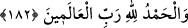

peygamberlere selâmdır. Zira her peygambere ayrı ayrı selâm etmek işi uzatır. Hadis-i
şerifte şöyle vârid olmuştur: “Bana salat ve selâm getirdiğiniz zaman diğer
peygamberlere de salat ve selâm getiriniz. Zira ben de ancak onlardan biriyim.”[226]
Nitekim bilgiler, Fethu’r-Rahmân, İbn Şeyh’in Havâşî’si ve bunların dışındaki bazı
eserlerde kaydedilmiştir.
Yine hadis-i şerifte şöyle buyrulmaktadır: “Bana salat ve selâm getirdiğiniz zaman
bunu âl ve ashâba da şâmil olacak şekilde genelleyiniz.”[227] el-Makâsidü’l-
hasene’de der ki, “Ben bu hadisi şerifi bu lafızla görmedim. Ancak bu hadis-i şerifin
bana ve Allah’ın diğer peygamberlerine salat ve selâm getiriniz. Zira beni peygamber
olarak gönderen Allah Teâlâ onları da peygamber olarak göndermiştir, mânâsında
olması mümkündür.”
182. Âlemlerin Rabbi olan Allah’a da hamd olsun!
“Âlemlerin Rabbi olan Allah’a da hamd olsun!”
Şeyh İzzeddin der ki: “
” sözü, Allah Teâlâ’nın zâtına ve sıfatlarına dair çeşitli
kemâlât ve olgunlukları ispata şâmil olan bir sözdür. Allah Teâlâ’nın “el-Alîm”, “el-
Kadîr”, “es-Semî”, “el-Basîr” gibi ispatı içeren isimleri “
” sözünün mânâ ve
muhtevasında mevcuttur. Buna göre biz bildiğimiz her kemâlât ve olgunluğu idrak
ettiğimiz her celâl ve azameti Allah’a ispat etmişizdir. Molla Ebü’s-Suûd der ki: Bu
kavl-i ilâhî Allah Teâlâ’nın bütün selbi sıfatlarla nitelendiğine tenbihten sonra, subûtî
sıfatlarla da nitelendiğine işaret etmektedir. Bu niteliklerin Allah Teâlâ’nın bir takım
güzel fiillerinde olduğunu bildirmektedir. İşte Allah Teâlâ’nın kullarına dini ve dünyevi
kemâlât ve olgunluklar ve bir nice muhtelif yüce kerametler akıtması bu kabildendir.
Yine Allah Teâlâ’nın peygamberlere ve onlara tâbi olanlara Allah’a hamd etmeyi
gerektiren zâhirî ve bâtinî bir nice muhtelif nimetleri bolca vermesi de bu kabildendir.
Bu kavl-i ilâhî Allah Teâlâ’nın peygamberlere vaad ettiği yardım ve üstünlüğün
gerçekleştiğini bildirmektedir. Bu kavl-i ilâhîden murat dini ve dünyevi kemâlâtın
kullara akmasında kullarla Allah Teâlâ arasında vesile ve vasıta olan peygamberlere
nasıl salât ü selâm getirecekleri ve Allah Teâlâ’yı nasıl tesbih edeceklerini, O’na nasıl
hamd edeceklerini mü’minlere tenbih etmektir. Belki de peygamberlere selâm etmeyi
Allah’ı tesbih etme, O’na hamd etme arasına getirmek sureyi hamd ile bitirmek içindir.
Ayrıca Allah Teâlâ’nın peygamberleri muvaffak kılması hamdi gerektiren nimetler
cümlesindendir. Bazıları der ki, kâfirleri helak etmesi ve mü’minleri kurtarması üzerine
her halükârda hamd Allah’a mahsustur. Yani iyi yahut kötü, faydalı yahut zararlı her
halükârda övülen yalnız O’dur.